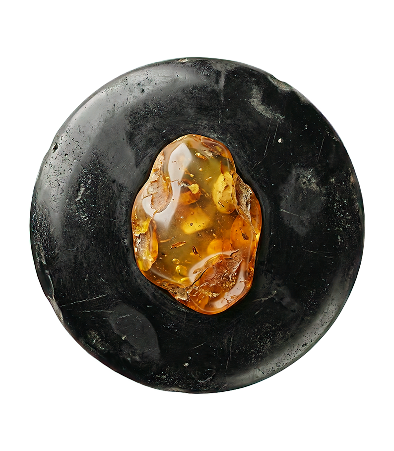
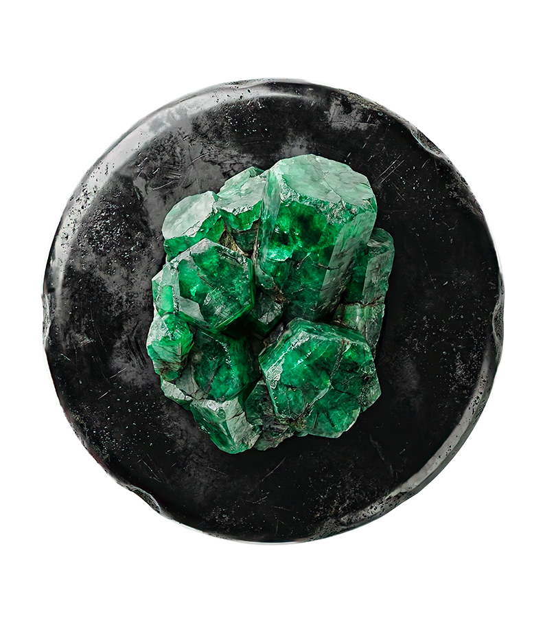
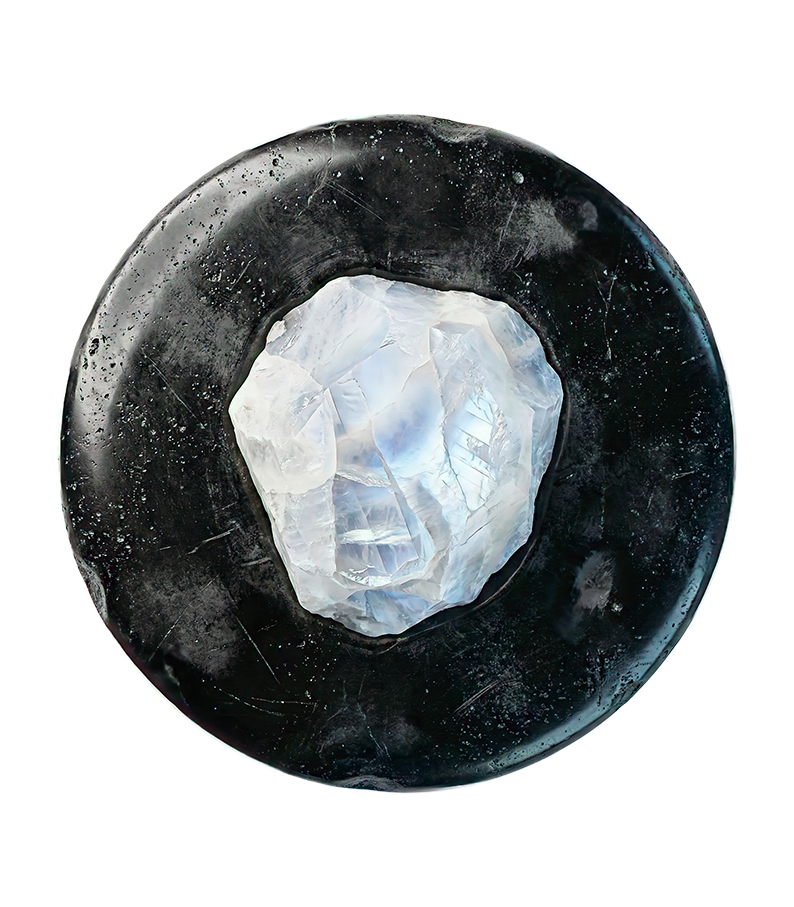
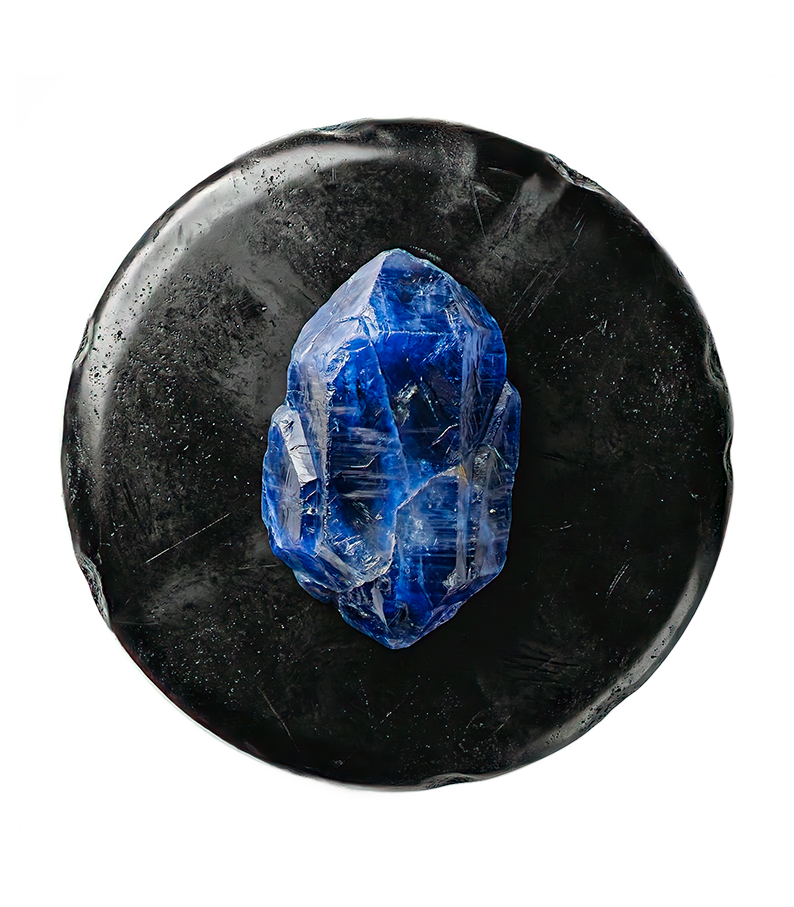

Chaque signe du zodiaque vibre à une fréquence particulière. Pour harmoniser ces énergies, la nature nous offre des talismans précieux : les cristaux. Porter la pierre de son signe, c'est amplifier ses forces naturelles et apaiser ses faiblesses. Voici nos alliées minérales pour chaque signe.
La lithothérapie ne prétend pas remplacer la médecine ni réécrire votre thème natal : elle agit comme un accompagnement énergétique, un rappel physique de l'intention qu'on porte. Une pierre se choisit d'abord à l'instinct — celle qui attire l'œil sans raison précise est souvent celle dont on a besoin. Elle se purifie ensuite (sous l'eau claire, à la fumée de sauge ou une nuit à la lumière de la lune) avant d'être rechargée, puis portée sur soi, posée près du lit, ou simplement tenue quelques minutes en méditation lorsqu'on cherche à se recentrer.

Signes de Feu
Énergie & Courage
Bélier : La Cornaline
Pierre de vitalité et de courage, la Cornaline rouge sang soutient l'énergie inépuisable du Bélier. Elle aide à canaliser l'impulsivité pour la transformer en force créatrice.
À porter en pendentif ou en bracelet avant une action qui demande du cran : un entretien, une confrontation, un premier pas.
Lion : L'Oeil de Tigre
Solaire et protectrice, cette pierre renforce la confiance naturelle du Lion tout en le protégeant des énergies négatives. Elle agit comme un miroir bouclier.
Idéale posée sur un bureau ou près de la porte d'entrée : elle filtre les énergies extérieures avant qu'elles n'atteignent votre espace.
Sagittaire : La Turquoise
La pierre des voyageurs par excellence. Elle protège le Sagittaire lors de ses explorations et favorise la communication sincère et la sagesse.
À glisser dans le sac avant un départ, un déménagement ou un grand changement de cap.

Signes de Terre
Stabilité & Abondance
Taureau : L'Émeraude
Liée à Vénus, l'Émeraude est la pierre de l'amour comblé et de l'abondance. Elle apaise le besoin de possession et ouvre le cœur.
Portée près du cœur, elle invite à savourer ce qu'on a déjà plutôt qu'à toujours vouloir sécuriser davantage.
Vierge : Le Jaspe
Pierre d'ancrage suprême. Elle aide la Vierge, souvent anxieuse et mentale, à se reconnecter à son corps et à la terre. Elle apporte organisation et sérénité.
À tenir dans la main lors d'une rumination mentale : le contact physique de la pierre ramène l'attention dans le corps.
Capricorne : L'Onyx
Pierre de force et de discipline. L'Onyx aide le Capricorne à rester concentré sur ses objectifs ambitieux tout en lui apportant une stabilité émotionnelle.
À porter les jours de charge mentale intense : elle aide à tenir le cap sans se laisser déborder par la pression.

Signes d'Air
Communication & Esprit
Gémeaux : La Citrine
Rayonnante et joyeuse, la Citrine stimule l'intellect vif du Gémeaux. C'est la pierre de la positivité qui chasse la confusion mentale.
À poser sur l'espace de travail avant une tâche qui demande de la clarté : elle aide à trier les idées plutôt qu'à les disperser.
Balance : Le Quartz Rose
La pierre de l'amour inconditionnel. Elle résonne avec la quête d'harmonie de la Balance, guérit les blessures affectives et favorise la paix.
À garder près du lit : elle apaise les tensions relationnelles accumulées dans la journée et favorise le pardon.
Verseau : L'Améthyste
Pierre de spiritualité et d'intuition. Elle aide le Verseau, visionnaire et cérébral, à connecter ses idées futuristes à une sagesse spirituelle.
Sous l'oreiller, elle favorise un sommeil réparateur et des rêves porteurs d'inspiration pour vos projets.

Signes d'Eau
Intuition & Émotion
Cancer : La Pierre de Lune
Connectée à l'astre de la nuit, c'est la pierre de l'intuition. Elle protège l'hypersensibilité du Cancer et régule ses humeurs changeantes.
À recharger à la pleine lune sur le rebord d'une fenêtre : c'est là qu'elle retrouve toute sa puissance apaisante.
Scorpion : L'Obsidienne
Pierre volcanique puissante. L'Obsidienne est un bouclier contre les ténèbres et aide le Scorpion dans ses cycles de transformation.
À utiliser en fin de cycle : deuil, rupture, changement de vie. Elle aide à couper net avec ce qui doit mourir pour renaître.
Poissons : L'Aigue-Marine
La pierre des marins. Elle apaise les angoisses du Poissons et favorise une expression claire de ses émotions souvent submergées.
Avant une prise de parole ou une conversation difficile, elle aide à transformer le flou intérieur en mots clairs.
"Les pierres sont les étoiles de la Terre."
LE GRIMOIRE DES CRISTAUX
Rituels & Secrets de Lithothérapie
Amour
★Le Rituel du Quartz Rose
"Guérir les blessures du cœur et attirer l'âme sœur..."
Lire le Rituel →Bien-être
☆Améthyste & Sommeil
"Chasser les insomnies et apaiser le stress mental..."
Lire le Conseil →Protection
★Bouclier Oeil de Tigre
"Renvoyer le mauvais œil à l'envoyeur..."
Activer →Énergie
☆Labradorite & Empathie
"Ne plus absorber les émotions des autres..."
Découvrir →Succès
★Citrine & Confiance
"Vaincre le syndrome de l'imposteur et oser briller..."
Rayonner →Intuition
☆La Pierre de Lune
"Se reconnecter à son féminin sacré et à ses cycles..."
Explorer →Ancrage
★Détox Tourmaline
"Épuisée par les écrans ? Retrouve ton énergie..."
S'ancrer →Vérité
☆Lapis Lazuli & Voix
"Gorge nouée ? Ose enfin dire ta vérité..."
Libérer →